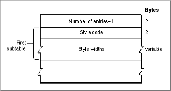

The Family Glyph-Width Table
The font family glyph-width table is used to specify glyph widths for the font family on a per-style basis. This table, which is shown in Figure 4-27, can contain a number of glyph-width subtables, with one subtable for each style in the family.Figure 4-27 The font family glyph-width table

The family glyph-width table consists of an integer count and a variable number of glyph-width subtables. The table is represented by theWidTabledata type, which is shown on page 4-44.Each glyph-width subtable in the table is represented by the
- Number of entries. An integer value that specifies the number of bounding-box entries in this table minus 1. This value is represented by the
numWidthsfield in the WidTabledata type.WidEntrydata type, which is shown on page 4-44. Each subtable consists of the following elements.
- Style code. An integer value that specifies the style code for this bounding-box entry. Style codes are shown in Figure 4-23 on page 4-89. This value is represented by the
widStylefield in theWidEntrydata type.- Style widths. A variable length array of integer values, with one entry in the array for each glyph in the font. Each width is in 16-bit fixed-point format, with the integer part in the high-order 4 bits and the fractional part in the low-order 12 bits.